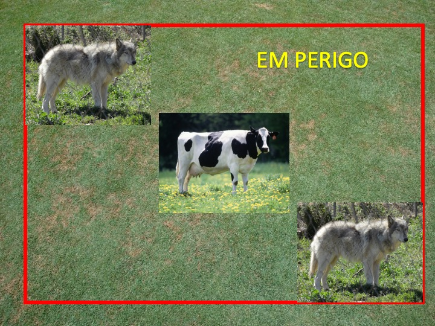
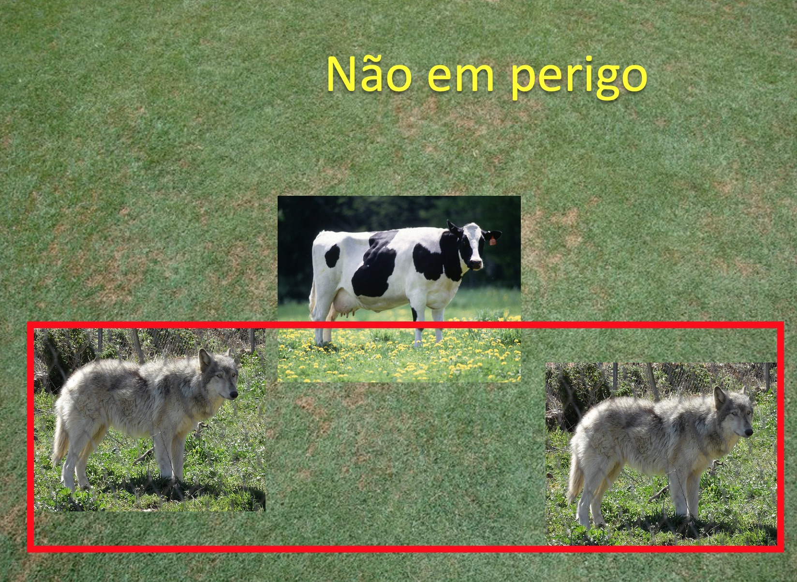

Detecção de Objetos Complexos com Redes Neurais
Nesta semana vamos trabalhar com um assunto extremamente atual: reconhecimento de objetos e rastreamento de objetos em vídeos.
Para isso, vamos utilizar uma arquitetura de rede neural chamada MobileNet, que é uma rede neural convolucional (CNN) desenvolvida para dispositivos móveis.
A arquitetura da MobileNet é otimizada para consumir pouca memória e processamento, sendo ideal para dispositivos com poucos recursos computacionais, como smartphones, tablets, Raspberry Pi, etc.
Referências:
Nesta atividade você aprenderá a:
- Carregar uma rede neural pré-treinada;
- Detectar objetos em imagens e vídeos;
- Processar a saída da rede neural.
O objetivo desta atividade é detectar vacas e lobos e avaliar se há uma situação de perigo ou não perigo para as vacas. A figura abaixo mostra um exemplo de situação de perigo e não perigo. É considerado perigo quando os lobos estão flanqueando as vacas, ou seja, quando os lobos estão cercando as vacas.
Devido a limitações no treinaento da rede neural, considere que toda detecção de dog, horse e sheep também será de lobos.
Perigo

Não perigo

import sys
import cv2
import matplotlib.pyplot as plt
import numpy as np
import math
from cow_wolf import DangerDetector # !!! Sempre Reiniciar o Kernel ao Mudar o Código !!!
Herdar a Classe do MobileNet
No arquivo cow_wolf.py modifique a classe DangerDetector para herdar da classe MobileNetDetector, que está no arquivo module_net.py.
Baixe o arquivos com os pesos da MobileNet no zip do Modulo 6 (estão no diretório config).
Certifique-se que os arquivos de pesos da MobileNet estão no diretório indicado na chamada do construtor da classe MobileNetDetector.
img = cv2.imread("img/cow_wolf_1.png")
# Carregar classe
Detector = DangerDetector(CONFIDENCE = 0.7)
image, resultados = Detector.detect(img)
print(resultados)
# Saida Esperada para "cow_wolf_1.png":
# [{'classe': 'cow', 'confidence': 0.9906375, 'bbox': (379, 131, 181, 120)}, {'classe': 'horse', 'confidence': 0.9441148, 'bbox': (53, 103, 244, 183)}, {'classe': 'horse', 'confidence': 0.93702084, 'bbox': (626, 103, 234, 182)}]
Região de Perigo
Modifique a função separar_caixa_entre_animais do arquivo cow_wolf.py utilizando a saida da MobileNet para:
-
Definir uma caixa azul sobre cada vaca;
-
Definir uma caixa vermelha unindo todos os lobos.
saida, animais = Detector.separar_caixa_entre_animais(img, resultados)
cv2.imshow("Saida", saida)
cv2.waitKey(0)
cv2.destroyAllWindows()
# Saida Esperada:
# Caixa vermelha sobre todos os lobos e uma caixa azul em cada vaca
Descubra se a vaca esta em perigo
Modifique a função checar_perigo do arquivo cow_wolf.py para passar por cada vaca. Utilize a função calcula_iou do arquivo cow_wolf.py para calcular se existe intersecção entre as caixas.
Escreva sobre cada vaca se ela esta ou não em perigo. Vermelho para perigo, se não, azul.
Explicação do IoU (Intersection over Union):
saida = Detector.checar_perigo(saida, animais)
cv2.imshow("Saida", saida)
cv2.waitKey(0)
cv2.destroyAllWindows()
# Saida Esperada:
# Vaca esta em perigo (em vermelho) para a imagem cow_wolf01.png
Agora modifique a imagem de entrada para uma das imagens abaixo e avalie o resultado com o esperado. 1. img/cow_wolf01.png - Perigo 2. img/cow_wolf02.png - Perigo 3. img/cow_wolf03.png - Não 4. img/cow_wolf04.png - Não 5. img/cow_wolf05.png - Não
{kind=link}
{kind=link}
{kind=link}
{kind=link}
{kind=link}